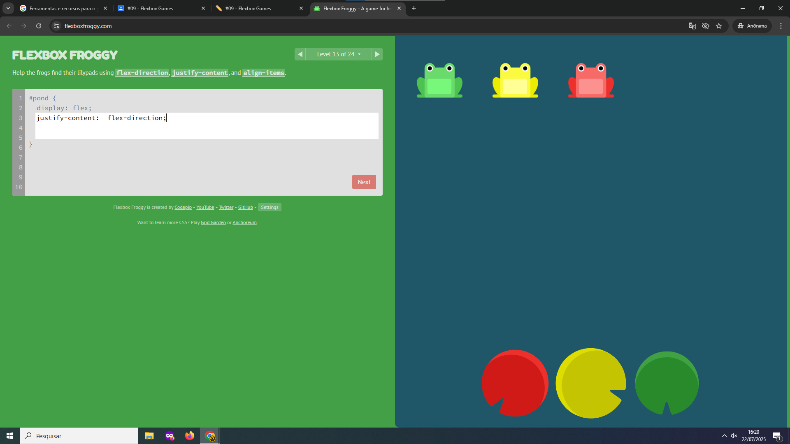

Nível 3: Achei interessante porque foi a primeira vez que precisei pensar no alinhamento horizontal usando justify-content. Embora tenha sido tranquilo, exigiu atenção para entender como os elementos se comportam no eixo principal.
Ellen Alves de Oliveira
Nível 3: Achei interessante porque foi a primeira vez que precisei pensar no alinhamento horizontal usando justify-content. Embora tenha sido tranquilo, exigiu atenção para entender como os elementos se comportam no eixo principal.
Nível 10: Esse foi mais desafiador. A propriedade space-around não é tão intuitiva no início, e entender como o espaço é distribuído em volta dos itens leva um tempinho.

Nível 13: Aqui o foco foi alinhar os itens no eixo vertical usando align-items. Foi útil para diferenciar bem o que cada propriedade faz, comparando com o alinhamento horizontal do justify-content.
Capítulo 3 - Nível 2: Precisei usar justify-content com precisão para posicionar o caçador corretamente em relação aos zumbis. Um erro mínimo já desalinhar tudo.

Capítulo 5 - Nível 1: O uso de flex-grow e flex-shrink foi novidade para mim. Levei um tempo para entender como balancear os tamanhos dos elementos.

Capítulo 6 - Nível 3: Esse nível bagunçou minha lógica ao misturar order com flex-direction: row-reverse. Demorou um pouco para eu entender o que estava acontecendo.

Para montar uma galeria de fotos que se adapta ao tamanho da tela, usaria Flexbox para alinhar os cards em linhas que podem quebrar para a próxima quando não couberem mais. Assim, os cards crescem e encolhem, ficando sempre bem distribuídos e organizados.